LL Buchanan Lake
Floating Island
Barney's Island.... A Floating Island.
Most recent photos first, descending into history...
Ongoing history of Barney's Island. Notice the annual tree growth. The original trees in the bottom photo are the ones in the top photos. The trees have only the top foot of above-water dirt in suspended 5 gallon buckets, but an unlimited supply of water and goose poop fertilizer. There is only an inch or so of soil over cloth covering heavy steel grating for the rest of the island. The steel grating is on top of various flotation devices. Every year the island produces a gaggle of Canadian goose goslings again, sometimes two gaggles. The nest is under the big tree. This is a five feather waterfowl suite.
2011, Spring....
Barney broke his cable anchor tether, again, so all three islands got a new anchor system. Now they each have a 2,040 pound block of concrete, attached to an "up line" of polypro rope, attached to an A-2 polyform float just below the water surface, attached to a 170 foot Dacron "top line" attached to the island. Without the heavy cable, the islands move faster and farther with the wind changes. Barney appreciates the speed. Barney got a new face mask, as usual. The official and only, cheap Barney Rubble face mask deteriorates in the sun. Barney's Island hosted both a goose nest and duck nest this year. The ducks were hatching while the island guys (two this year) were adding new wire protection around two of the trees that got nibbled by beaver.
2010, December....
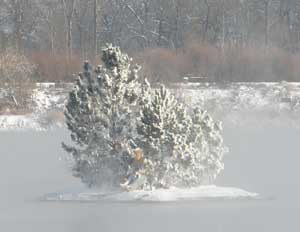
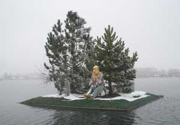
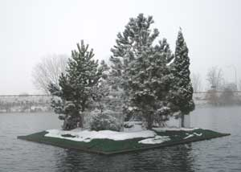
2010, Summer (The camera guy fumbled the photo effort.) Barney got a larger fishing pole (found in a dumpster). It won't catch more fish, but equipment is often more popular than that for which it is used. He got a new Barney mask again, because there is no sun lotion to protect cheap rubber masks. And his island got another 500 pounds of anchor weight because the trees have become so large the wind started to drag the anchor. The new anchor adventure required pulling over 200 feet of heavy anchor cable slack back up to the island, and holding it there, so the five new concrete anchor weights would slide straight down to the cluster of original weights at the end of the cable. Then the heavy cable had to be lowered slowly to avoid loops of cable looping everywhere fast if the cable got out of control. That wore holes in the anchor guy's gloves and jeans. Well, island anchoring is yet an uncommon skill, still being learned. The goose nest was given a bit more willow trimming cover. The juniper shrub was given a wider protective fence.
2009, May. The three floating islands. Barney's Island on the right.
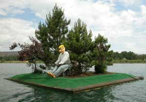
2009, May The photo guy cleaned off the goose fertilizer before he took the photo.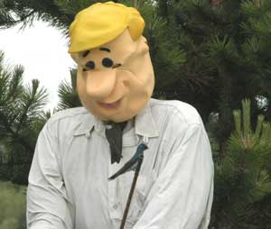
A couple of Violet Greenback Swallows wisely nested inside Barney again this year. Their doorway is above the top button of Barney's shirt. Barney likes little birds. This is a five feather dicky bird suite.
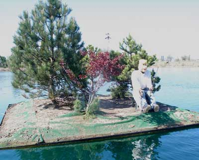
2008, May
Barney got a new mask again. Sitting in the sun all the time is not good for rubber mask material.
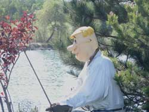
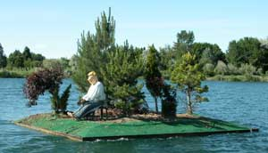
2007, June
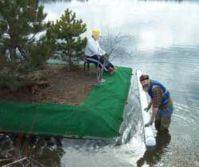
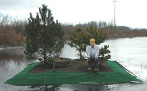
2007, February: Barney's anchor cable broke, and the wind washed the island against the shore, so it was a convenient time to give Barney a new green carpet deck cover, and 900 pounds of additional flotation capacity (capped 6" x 15' PVC pipes), lifting the sagging corner of the island. A new goose nest was added, with a roof of willows to obscure it.The island was towed back to the south center part of the lake, and anchored with 7 five gallon buckets of concrete at the bottom of 350 feet of cable, in the 120 foot deep lake, to give Barney a bit of drifting space.
Barney got a new Barney mask, replacing the previous stand-in actor mask that was the only adequate mask in town at the time the new mannequin was made.
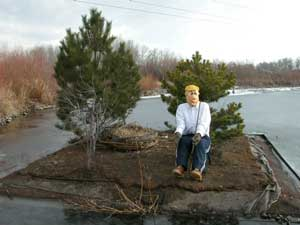
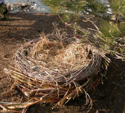
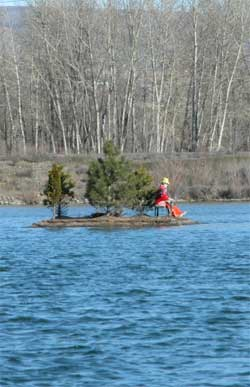
2006, February . Barney's stand-in actor got some bright new clothes, selected from the latest men's fashions at the finer local clothiers and haberdasheries, (the Goodwill Store). A can of yellow spray paint spiffied up his hat color. Yeah, try to put clothes on someone who is wired to a chair and refuses to move his arms.Some willow branches were cobbled together for a new goose nest on the island.
Barney's island is visible on GoogleEarth, as are the Tenerife vacation deals in the Canary Islands, off the northwest coast of Africa.
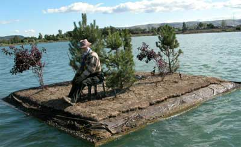
2005, May
After sitting in the weather a long time, Barney got a complete upgrade. The bucket and PVC pipe mannequin was replaced with a 2 x 4 wood mannequin, shown below. If he does not look like Barney Rubble, it is because he hired a cheap stand-in movie actor, while we try to find another Barney mask.
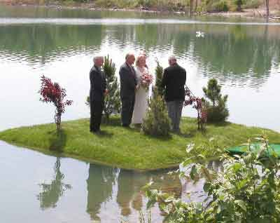
2000, Spring
The wedding on Barney's island
Barney loaned his island to a wonderful couple, for a wedding. Barney watched from the shore.
It was a superlative wedding. The couple are fun people. The sun was shining as usual. The breeze was calm. A bagpiper played fine music. The people were smiling. The children played on the nearby piles of sand and gravel. Some of the adults did also. The geese swam by. The osprey family watched from their nearby nest on a tower. Everyone enjoyed the event, then went to the Yakima Arboretum adjacent to the south end of the lake, for the reception. Fun time.
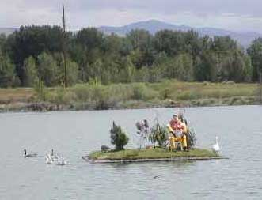
1998, the original Barney on his island.
Barney Rubble, the rock pit equipment operator and friend of Fred Flintstone from the Flintstones TV comedy, sat in a small rowboat in the middle of the gravel pit when it was filling with water. He became rather famous. He patiently sat there with a fishing pole, like all good fishermen, while people with binoculars kept asking if he was real, as is commonly asked about fishermen. After the lake filled, he traveled a bit from time to time, to other lakes, and then returned to Buchanan Lake when he was offered his own private island. It is a modest island, 17 feet on each side, but with trees and a lawn. The ducks and geese enjoy his island, and nest on it. The floating island floats around the lake on a cable tether anchored near the middle of the lake.
How fishermen are made........
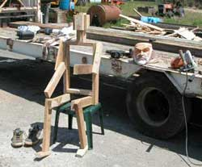
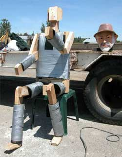
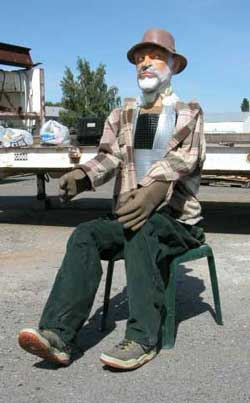
Betty's Island-1
Betty's Island-2
Betty's Island-3
Betty's Island-4
Betty's Island-5
Betty's Island-6
Aerial Photos
Pebbles Island
Neighbors
History
Swans
Birds
Trees
Trees-2
Trees-3
Lake
Links